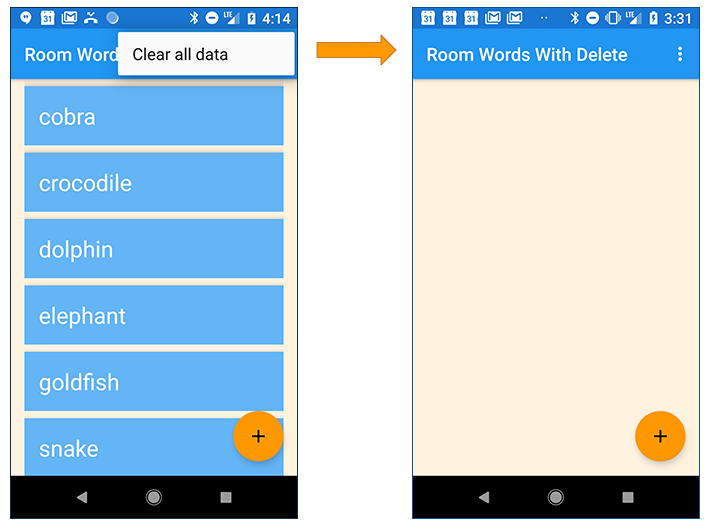
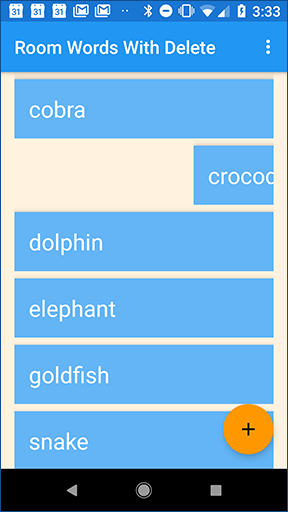
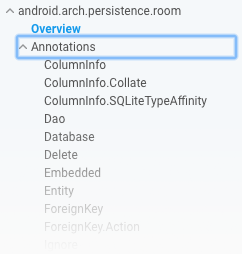

この実践的なコードラボはユニット 4: Android Developer Fundamentals (Version 2) コースのユーザーデータの保存に含まれています。コードラボを順番に進めていくことで、このコースを最大限に活用することができます。
注：このコースでは、「codelab」と「practical」という用語を使い分けています。
序章
このコードラボ(実践編)は、10.1 Part A: Room, LiveData, ViewModel に続きます。このコードラボでは、データベース機能を実装するためにRoomライブラリが提供するAPIを使用することについて、より多くの練習をすることができます。データベースから特定の項目を削除する機能を追加します。このコードラボには、ユーザーが既存のデータを編集できるようにアプリを更新するコーディング課題も含まれています。
すでに知っておくべきこと
Android Studio 3.0以上でアプリを作成・実行できること。特に、以下のことに精通していること。
RecyclerViewとアダプタを使用しています。RoomDatabase を使用して、Android の組み込み SQLite データベースにデータを保存および取得します。これらのトピックについては、10.1 Part A: Room、LiveData、および ViewModel で学習しました。あなたが学ぶこと
あなたがすること
前回のコードラボで作成したRoomWordsSampleアプリを拡張します。これまでのところ、このアプリは単語のリストを表示し、ユーザーは単語を追加することができます。アプリを閉じて再度開くと、アプリはデータベースを再初期化します。ユーザーが追加した単語は失われます。
この実用的な方法では、既存のデータがない場合には、データベース内のデータを初期化するだけのアプリを拡張します。
そして、すべてのデータを削除できるメニューを追加します。

また、ユーザーが単語をスワイプしてデータベースから削除できるようにすることもできます。

前回の実践で作成したRoomWordsSampleアプリは、ユーザーがアプリを開くたびにデータを削除して再作成します。この動作は理想的ではありません。なぜなら、ユーザーはアプリを閉じたときに追加した単語をデータベースに残しておきたいからです。(前回の実践での解決コードはGitHubにあります)
このタスクでは、アプリを開いたときに、データベースにデータがない場合にのみ初期データセットが追加されるようにアプリを更新します。
データベースにすでにデータが含まれているかどうかを検出するには、クエリを実行して1つのデータ項目を取得します。クエリが何も返さない場合は、データベースは空です。
注: 本番環境のアプリでは、アプリの再起動時にデータを再初期化せずにすべてのデータを削除できるようにしたい場合があります。しかし、テスト目的では、すべてのデータを削除してから、アプリの起動時にデータを再初期化できると便利です。
1.1 DAOにメソッドを追加して単一の単語を取得する
現在、WordDao インターフェースには、すべての単語を取得するためのメソッドはありますが、単一の単語を取得するためのメソッドはありません。単一の単語を取得するメソッドは、必要なときにアプリが明示的にメソッドを呼び出すので、LiveDataを返す必要はありません。
WordDaoインターフェースで、任意の単語を取得するメソッドを追加します。@Query("SELECT * from word_table LIMIT 1")
Word[] getAnyWord();ルームは、getAnyWord()メソッドが呼び出され、1つの単語を含む配列を返すときにデータベースクエリを発行します。これを実装するために追加のコードを書く必要はありません。
1.2 初期化方法を更新してデータの有無を確認する
データベースを初期化するメソッドでgetAnyWord()メソッドを使用します。データがある場合はそのままにしておきます。データがない場合は、初期データセットを追加します。
PopulateDBAsyncはWordRoomDatbaseのインナークラスです。PopulateDBAsyncでは、doInBackground()メソッドを更新して、データを初期化する前にデータベースにワードがあるかどうかをチェックします。@Override
protected Void doInBackground(final Void... params) {
// If we have no words, then create the initial list of words
if (mDao.getAnyWord().length < 1) {
for (int i = 0; i <= words.length - 1; i++) {
Word word = new Word(words[i]);
mDao.insert(word);
}
}
return null;
}
2. アプリを実行し、いくつかの新しい単語を追加します。アプリを閉じて再起動します。アプリを閉じて再度開いたときに単語が持続するようになっているので、追加した新しい単語が表示されるはずです。
前回の実践では、データベースを開いたときに deleteAll() メソッドを使って、すべてのデータを消去しました。deleteAll() メソッドは、アプリの起動時にのみ PopulateDbAsync クラスから呼び出されていました。deleteAll() メソッドを ViewModel から利用できるようにして、アプリが必要なときにいつでもメソッドを呼び出すことができるようにします。
ここでは、Roomライブラリを使用してデータベースと対話するメソッドを実装するための一般的な手順を説明します。
deleteAll()メソッドについては、前回の実践ですでにこのステップを行っています。WordRepositoryクラスにメソッドを追加します。バックグラウンドでメソッドを実行するコードを記述します。WordRepositoryクラスのメソッドを呼び出すには、WordViewModelにメソッドを追加します。アプリの残りの部分は WordViewModel からメソッドにアクセスすることができます。2.1 WordDao インターフェースに deleteAll() を追加し、それに注釈を付けます。
WordDaoでは、deleteAll()メソッドが定義されており、そのメソッドが実行されたときに実行されるSQLがアノテーションされていることを確認します。@Query("DELETE FROM word_table")
void deleteAll();2.2 WordRepository クラスに deleteAll() を追加します。
WordRepositoryにdeleteAll()メソッドを追加し、バックグラウンドですべての単語を削除するためのAsyncTaskを実装します。
WordRepositoryで、deleteAllWordsAsyncTaskを内部クラスとして定義します。doInBackground()を実装し、DAO上でdeleteAll()を呼び出してすべての単語を削除します。private static class deleteAllWordsAsyncTask extends AsyncTask<Void, Void, Void> {
private WordDao mAsyncTaskDao;
deleteAllWordsAsyncTask(WordDao dao) {
mAsyncTaskDao = dao;
}
@Override
protected Void doInBackground(Void... voids) {
mAsyncTaskDao.deleteAll();
return null;
}
}WordRepository クラスで、定義した AsyncTask を呼び出す deleteAll() メソッドを追加します。public void deleteAll() {
new deleteAllWordsAsyncTask(mWordDao).execute();
}2.3 WordViewModelクラスにdeleteAll()を追加する
deleteAll()メソッドをWordViewModelに追加してMainActivityで利用できるようにする。
WordViewModelクラスにdeleteAll()メソッドを追加します。public void deleteAll() {mRepository.deleteAll();}次に、ユーザがdeleteAll()を起動できるようにメニュー項目を追加します。
注：アプリの生産版では、ユーザーが誤ってデータベース全体を消去しないようにセーフガードを提供する必要があります。ただし、アプリを開発している間は、テストデータをすばやくクリアできると便利です。これは、アプリを開いたときにアプリがデータを消去しない場合に特に当てはまります。
3.1 すべてのデータを消去するメニューオプションの追加
menu_main.xmlで、メニューオプションのタイトルとIDを以下のように変更します。<item
android:id="@+id/clear_data"
android:orderInCategory="100"
android:title="@string/clear_all_data"
app:showAsAction="never" />MainActivityでは、WordViewModelオブジェクト上でdeleteAll()メソッドを呼び出すためのonOptionsItemSelected()メソッドを実装します。@Override
public boolean onOptionsItemSelected(MenuItem item) {
int id = item.getItemId();
if (id == R.id.clear_data) {
// Add a toast just for confirmation
Toast.makeText(this, "Clearing the data...",
Toast.LENGTH_SHORT).show();
// Delete the existing data
mWordViewModel.deleteAll();
return true;
}
return super.onOptionsItemSelected(item);
}
注意：データをクリアした後、Android Studioからアプリを再デプロイすると、初期データセットが再度表示されます。アプリを開くと、空のデータセットが表示されます。
あなたのアプリでは、ユーザーは単語を追加したり、すべての単語を削除することができます。タスク4と5では、RecyclerViewのアイテムをスワイプすることで単語を削除できるようにアプリを拡張します。
繰り返しになりますが、ここではRoomライブラリを使用してデータベースと対話するメソッドを実装するための一般的な手順を説明します。
WordRepositoryクラスにメソッドを追加します。バックグラウンドでメソッドを実行するコードを記述します。WordRepositoryクラスのメソッドを呼び出すには、WordViewModelにメソッドを追加します。アプリの残りの部分は WordViewModel からメソッドにアクセスすることができます。4.1 DAO に deleteWord() を追加してアノテーションを付けます。
WordDaoでは、deleteWord()メソッドを追加します。@Delete
void deleteWord(Word word);この操作は単一の行を削除するので、@Deleteアノテーションだけでデータベースから単語を削除することができます。
4.2 WordRepository クラスに deleteWord() を追加します。
WordRepositoryで、deleteWordAsyncTaskという別のAsyncTaskをインナークラスとして定義します。DAO上でdeleteWord()を呼び出して単語を削除するdoInBackground()を実装しています。private static class deleteWordAsyncTask extends AsyncTask<Word, Void, Void> {
private WordDao mAsyncTaskDao;
deleteWordAsyncTask(WordDao dao) {
mAsyncTaskDao = dao;
}
@Override
protected Void doInBackground(final Word... params) {
mAsyncTaskDao.deleteWord(params[0]);
return null;
}
}WordRepositoryで、定義したAsyncTaskを呼び出すためのdeleteWord()メソッドを追加します。public void deleteWord(Word word) {
new deleteWordAsyncTask(mWordDao).execute(word);
}4.3 WordViewModelクラスにdeleteWord()を追加する
deleteWord() メソッドをアプリ内の他のクラス、特に MainActivity で利用できるようにするには、WordViewModel に追加します。
WordViewModelにdeleteWord()メソッドを追加します。public void deleteWord(Word word) {mRepository.deleteWord(word);}これでワードを削除するロジックが実装されました。まだ、アプリのUIから単語の削除操作を呼び出す方法はありません。次はそれを修正します。
このタスクでは、ユーザーが RecyclerView でアイテムをスワイプして削除できるようにする機能を追加します。
RecyclerViewにスワイxプ機能を実装するには、Androidサポートライブラリ(バージョン7以上)で提供されているItemTouchHelperクラスを使用します。ItemTouchHelperクラスには以下のメソッドがあります。
onMove() は、ユーザーがアイテムを移動したときに呼び出されます。このアプリでは、移動機能は実装しません。onSwipe()は、ユーザーがアイテムをスワイプしたときに呼び出されます。スワイプされた単語を削除するためにこのメソッドを実装します。5.1 スワイプされたワードを検出するためにアダプタを有効にします。
WordListAdapter で、指定した位置の単語を取得するメソッドを追加します。public Word getWordAtPosition (int position) {
return mWords.get(position);
}MainActivityのonCreate()で、ItemTouchHelperを作成します。ItemTouchHelperをRecyclerViewにアタッチします。// Add the functionality to swipe items in the
// recycler view to delete that item
ItemTouchHelper helper = new ItemTouchHelper(
new ItemTouchHelper.SimpleCallback(0,
ItemTouchHelper.LEFT | ItemTouchHelper.RIGHT) {
@Override
public boolean onMove(RecyclerView recyclerView,
RecyclerView.ViewHolder viewHolder,
RecyclerView.ViewHolder target) {
return false;
}
@Override
public void onSwiped(RecyclerView.ViewHolder viewHolder,
int direction) {
int position = viewHolder.getAdapterPosition();
Word myWord = adapter.getWordAtPosition(position);
Toast.makeText(MainActivity.this, "Deleting " +
myWord.getWord(), Toast.LENGTH_LONG).show();
// Delete the word
mWordViewModel.deleteWord(myWord);
}
});
helper.attachToRecyclerView(recyclerView);
// Add the functionality to swipe items in the
// recycler view to delete that item
ItemTouchHelper helper = new ItemTouchHelper(
new ItemTouchHelper.SimpleCallback(0,
ItemTouchHelper.LEFT | ItemTouchHelper.RIGHT) {
@Override
public boolean onMove(RecyclerView recyclerView,
RecyclerView.ViewHolder viewHolder,
RecyclerView.ViewHolder target) {
return false;
}
@Override
public void onSwiped(RecyclerView.ViewHolder viewHolder,
int direction) {
int position = viewHolder.getAdapterPosition();
Word myWord = adapter.getWordAtPosition(position);
Toast.makeText(MainActivity.this, "Deleting " +
myWord.getWord(), Toast.LENGTH_LONG).show();
// Delete the word
mWordViewModel.deleteWord(myWord);
}
});
helper.attachToRecyclerView(recyclerView);.
コードで気づくこと
onSwiped() は、スワイプされた ViewHolder の位置を取得します。
int position = viewHolder.getAdapterPosition();位置を指定すると、アダプタで定義した getWordAtPosition() メソッドを呼び出すことで、ViewHolder で表示されている単語を取得できます。
Word myWord = adapter.getWordAtPosition(position);WordViewModel上でdeleteWord()を呼び出して単語を削除します。
mWordViewModel.deleteWord(myWord);
今すぐアプリを実行し、いくつかの単語を削除します。
Android Studioプロジェクト。RoomWordsWithDelete
注: コーディングの課題はすべて任意であり、後のレッスンの前提条件ではありません。
課題：アプリをアップデートして、ユーザーが単語をタップして編集し、変更内容を保存できるようにします。
ヒント
NewWordActivityに変更を加える
NewWordActivityに機能を追加して、新しい単語の追加や既存の単語の編集に使用できるようにすることができます。
Wordで自動生成されたキーを使用する
Wordエンティティクラスは、ワードフィールドをデータベースのキーとして使用します。しかし、データベース内の行を更新する場合、更新される項目を主キーにすることはできません。そのため、主キーとして使用するために自動生成されたidを追加する必要があります。
@PrimaryKey(autoGenerate = true)
private int id;
@NonNull
@ColumnInfo(name = "word")
private String mWord;コンストラクタを追加します。
取る言葉
id
id と word をパラメータとするコンストラクタを Word エンティティクラスに追加します。この追加コンストラクタには @Ignore を使用してアノテーションを付けてください。
@Ignore
public Word(int id, @NonNull String word) {
this.id = id;
this.mWord = word;
}既存のWordを更新するには、このコンストラクタを使用してWordを作成します。Room は主キー (この場合は id) を使用してデータベース内の既存のエントリを検索し、更新できるようにします。
WordDaoでは、このようにupdate()メソッドを追加します。
@Update
void update(Word... word);WordRoomDatabaseでは、データベースのテーブルスキーマが変更されたため、データベースのバージョン番号を増やす。
@Database(entities = {Word.class}, version = 2, exportSchema = false)チャレンジソリューションコード
Android Studioプロジェクト。RoomWordsWithUpdate
データベースのコードを書く
@insert、@delete、@update、@queryのようにアノテーションします。例えば
@Delete
void deleteWord(Word word);
@Update
void update(Word... word);
@queryアノテーションを使用して、操作のためのSQLを提供します。例えば
@Query("SELECT * from word_table ORDER BY word ASC")
LiveData<List<Word>> getAllWords();
@Query("DELETE FROM word_table")
void deleteAll();
アイテムタッチヘルパー
RecyclerViewでアイテムをスワイプや移動できるようにするには、ItemTouchHelperクラスを使用します。onMove() と onSwipe() を実装します。RecylerView用のアダプタにメソッドを追加することができます。このメソッドは位置を取得し、該当するアイテムを返します。メソッドは onMove() または onSwipe() の中で呼び出します。関連するコンセプトのドキュメントは10.1にあります。Room、LiveData、ViewModel にあります。
エンティティ、データアクセスオブジェクト(DAO)、ViewModel。
android.arch.persistence.roomに行き、左のナビにあるAnnotationsメニュー項目を展開します。 
アイテムタッチヘルパーです。
このセクションでは、インストラクターが主導するコースの一部として、このコードラボを通して作業する学生のための可能な宿題をリストアップします。以下のことをするかどうかはインストラクター次第です。
講師は、彼らが望むように少しまたは多くのようにこれらの提案を使用することができますし、彼らが適切であると感じる他の宿題を割り当てるために自由に感じるはずです。
もしあなた自身でこのコードラボに取り組んでいるのであれば、これらの宿題を使ってあなたの知識をテストしてみてはいかがでしょうか。
アプリを構築して実行する
データを保存する方法がいくつかあることがわかりましたね。正しい保存方法を選択するかどうかは、データがどれくらい大きいか、データがどれくらいの期間生き残る必要があるかによります。
少なくとも 2 つの異なる場所に保存されているデータが、構成の変更やアプリの破壊にどのように生き残るかを示すアプリを作成します。文字列などの小さなデータを異なるデータ ストアに保存することで、これを行うことができます。
savedInstanceStateで保存されたデータ、ViewModelでLiveDataを使用したデータ、ファイルやデータベースに保存されたデータがどうなるかをデモすることができました。以下の質問に答えてください。
質問1
Android Architecture Componentsでは、DAOのためにいくつかの便利なアノテーションを提供しています。以下のうち、どれが利用できますか？該当するものをいくつでも選んでください。
彡(ﾟ)(ﾟ)(ﾟ)(ﾟ)o(ﾟ)o質問2
アーキテクチャコンポーネントを使用するメリットは何ですか？
アプリを提出して採点を受ける
学年別ガイダンス
アプリが以下の機能を持っているかどうかを確認しましょう。
Android Developer Fundamentals (V2)コースの次の実践的なコードラボを見つけるには、Codelabs for Android Developer Fundamentals (V2)を参照してください。
概念章、アプリ、スライドへのリンクを含むコースの概要については、Android Developer Fundamentals (Version 2)を参照してください。